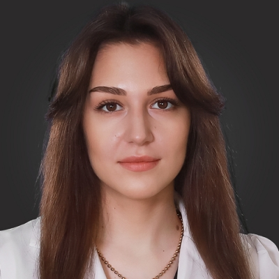

Петросян
Альбина
Сергеевна

Доказательная медицина: диагностика, разбор анализов и персонализированное ведение пациентов
Доказательная
медицина
Опираюсь на международные клинические рекомендации — с чётким планом диагностики, понятными объяснениями и сопровождением на каждом этапе.
От хаоса анализов —
к ясному плану
Разбираемся в истинной причине жалоб, убираем ненужные обследования и подбираем терапию, которая работает вдолгую.
Точечные обследования, прозрачный диагноз и комфортное ведение без лишних назначений.
Щитовидная и околощитовидные железы
Диагностика и лечение гипотиреоза, тиреотоксикоза, узловых образований, аутоиммунного тиреоидита и нарушений кальций-фосфорного обмена.
Образование
и экспертиза
Специальность «Эндокринология», действительна до августа 2029 года.
Специальность «Эндокринология», г. Москва.
Высшее медицинское образование, диплом с отличием.
Автор и соавтор работ в рецензируемых медицинских изданиях по редким эндокринным синдромам и диабетологии.
Перед приёмом
Специально сдавать расширенные панели заранее не требуется — часто часть показателей оказывается лишней. Возьмите с собой уже имеющиеся результаты анализов, УЗИ и выписки за последние 1–2 года, а список необходимых обследований определим после беседы.
Вы заранее присылаете в Telegram или WhatsApp имеющиеся обследования и список принимаемых препаратов. В согласованное время разбираем результаты, обсуждаем возможные причины жалоб и план дальнейших действий.
Да. Если диагноз вызывает сомнения, назначенная схема лечения не дает результата или нужно оценить необходимость операции (например, при узлах щитовидной железы), разберем ситуацию по актуальным клиническим рекомендациям.
Запишите названия и дозировки всех препаратов и добавок, которые принимаете сейчас. При диабете или колебаниях давления полезно взять с собой дневник измерений за последние 7–14 дней.
Прямая связь
Отвечаю в мессенджерах в течение дня в перерывах между очными приёмами.